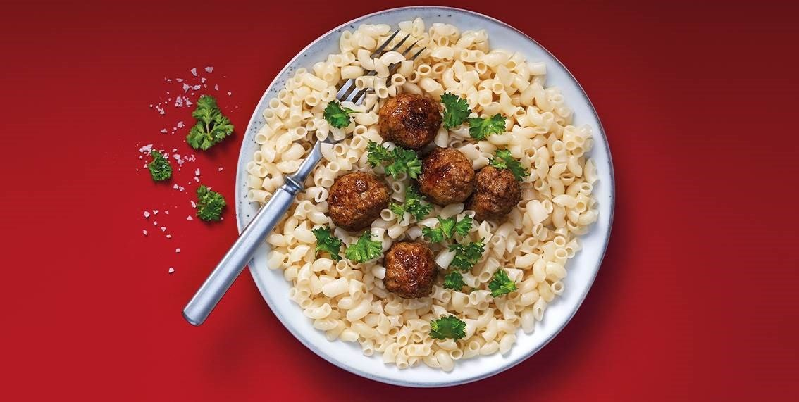

Köttbullar och Makaroner

Snabbaste receptet i listan, endast två ingredienser och snabblagat.'
Vi brukar äta med makaroner, men anda sorters pasta funkar lika bra.
Tips
- Servera med Lingongsylt, pressgurka och lite persilja.
- Stek fört lite lök för att få smak på köttbullarna.
- Häll i lite grädde i stekpannan efter att köttbullarna är steka för att göra en enklel sås.
Receptlistan